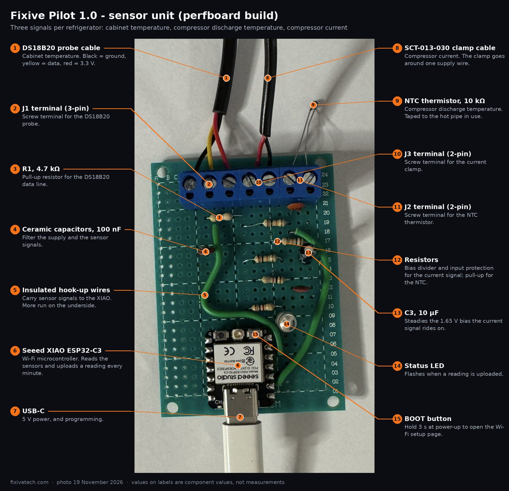
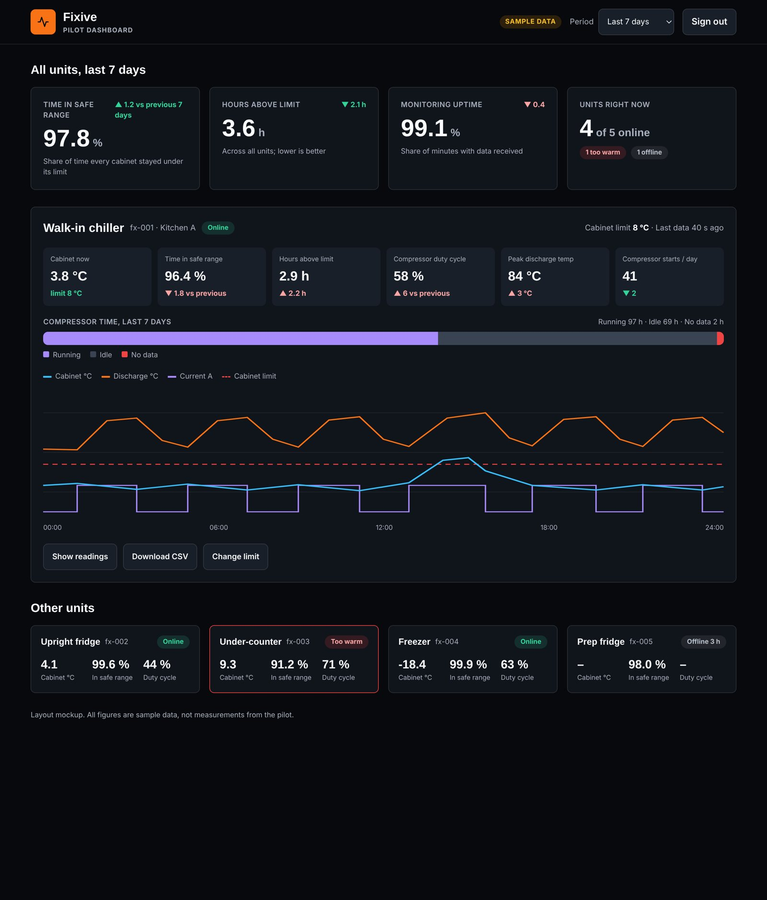

See trouble early
Equipment often keeps working while it strains. A fridge can hold its temperature while the compressor works harder and harder. Fixive watches the load, not only the temperature.
Kitchen equipment monitoring and preventive maintenance. Saudi Arabia.
Fixive puts small sensors on commercial kitchen equipment, starting with chillers and freezers. Readings are taken every minute, so a problem shows up as a warning on your phone, not as a breakdown in the middle of service.
Pilot stage, starting with refrigeration. Sensor units are running at a restaurant in Al Ahsa, and more sites are being added.
Why this matters
Equipment often keeps working while it strains. A fridge can hold its temperature while the compressor works harder and harder. Fixive watches the load, not only the temperature.
One dashboard for every unit and branch, with a temperature limit for each cabinet. Phone alerts are next on the build list.
Planned visits replace emergency call-outs, and readings before and after a repair show whether the unit actually recovered.
How it works
A clamp-on current sensor and temperature probes go on the unit. Nothing is cut or opened in the equipment.
A reading is taken every minute and kept on the device if the Wi-Fi drops, then sent when it returns.
When a limit is crossed or the compressor pattern changes, an inspection is planned before it becomes a breakdown.
The fix is logged and checked against the readings, so you can see that the unit is healthy again.
What's built
Fixive Pilot 1.0, our current sensor unit, has been built and tested on a working refrigerator. Pilot sites sign in to the dashboard to see their own units.


Interactive demo
Demo only. Sensor readings, alerts, equipment records, maintenance events, and performance indicators in this demo are simulated.
Condition monitoring for preventive maintenance
Current draw stable after defrost cycleToday
Door-open recovery trend improving7 days
Compressor runtime drift under observation14 days
Fixive uses signal changes to schedule inspection and maintenance before failure.
Refrigeration units at pilot sites, with a dashboard and a limit for each cabinet
Alerts to the right person, and pilots in Al Ahsa, Dammam and Riyadh
Beyond refrigeration, once pilot data supports it. Not available today.
The pilot
We fit sensors on selected chillers and freezers and give you a dashboard login. The pilot is free and carries no purchase commitment.
Monitoring shows when to inspect. The value comes from the maintenance visit and the follow-through after it.
Refrigeration contractors and POS platforms: monitored units give your customers a reason to call before the breakdown. Write to us to talk about working together.
Join the pilot
We are looking for restaurants and food shops in Al Ahsa, Dammam and Riyadh. The pilot starts with your fridges, freezers and walk-in rooms.